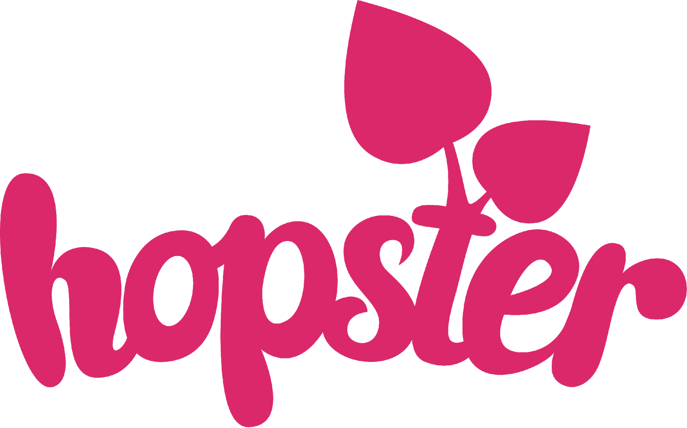
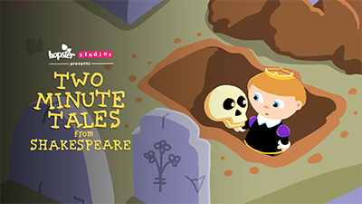

HOPSTER LAUNCHES TWO MINUTE TALES FROM SHAKESPEARE
NEW ANIMATED SERIES & 10 ACTIVITY PACKS: FOR 4YR+

London, 14 September 2020– Hopster, the BAFTA-nominated educational and entertainment digital platform that helps preschoolers learn through kids TV shows, music, games and books has launched a brand new animated series Two Minute Tales from Shakespeare which is available now.
This original animation from Hopster Studios is the third season of our popular snappy stories, Two Minute Tales developed by Hopster Studios Productions produced by the Consortium of Gentlemen. The series features nine of classic Shakespeare plays retold in two minutes in a witty, speedy and magical way and features an additional episode about Shakespeare himself.
The series aimed at 4 - 6 year olds, was developed with a Shakespearan expert - and introduces preschoolers to Shakespeare, its iconic characters, famous quotes and immersive core themes - plays include: Hamlet, The Tempest, Romeo and Juliet, Henry IV, King Lear, Macbeth and Othello.
Episode Synopsis (10 x2min)
To support this series, Hopster has created a detailed and educational ten-page activity pack for each episode that has been developed by our Head of Learning and offers children a deeper understanding of the stories and the art of storytelling through learning activities, fun games and crafts. Hopster has also commissioned a How to Make Your Own Cereal box theatre video HERE and familles can find cutout characters and backdrops in each pack to help little ones learn the art of storytelling and theatre - just like Shakespeare . All ten packs can be downloaded HERE, to view a mini-trailer of the packs watch HERE
The first two series of Two Minute Tales are based on the much-loved traditional Grimm’s Fairy Tale have been internationally well-received, offering preschoolers fast-paced, modern and quirky stories that challenge traditional gender stereotypes and promotes diversity. This year Two Minute Tales has been screened and selected for awards around the world which include Animafilm International Animation Festival (Azerbaijan) for Best Animated TV series, CMS, International Children’s Film Festival (Lucknow, India). Last year it was shortlisted for a British Animation Award in the Best Short Form Content category.
Ellen Solberg, Head of Content at Hopster said “Shakespeare's plays are wonderfully layered and complex, but can be hard for kids to engage with from a young age. We hope that by introducing kids to the key themes and characters of his stories in an enjoyable, creative and preschool-friendly way, they may go on to develop a stronger interest and passion for his plays and theatre later in life.
Narrator, Writer, Animator and Director - Mole Hill at the Consortium of Gentlemen said “It’s been fascinating adapting Shakespeare for such a young audience - the themes and characters in the plays are so strong that there’s an embarrassment of riches to work with!"
Watch the 5 episodes of Two Minute Tales from Shakespeare HERE (password: fairytale)
CLICK HERE FOR TRAILER and IMAGES.
- ENDS -
For more information please contact:
About Hopster – www.hopster.tv
Hopster is a beautifully designed app for the under-sixes, aiming to strike the perfect balance between learning and fun. For one low monthly subscription with no tie-ins, Hopster subscribers get access to a large selection of kid’s TV shows, stimulating learning games, nursery rhymes and music.
Hopster is trusted by millions of parents worldwide to keep their kids amazed with fun educational content in a safe and ad-free environment. It has topped the App Store charts in over 36 countries, was named Best Streaming Video Platform for preschoolers by Kidscreen as has received a channel nomination at the Children’s BAFTA in 2018 and 2019.
Hopster can be downloaded free from the App Store and Google Play and can be found on selected smart TVs such as Amazon Fire TV, EE TV and Roku in the UK, Roku Channels, Comcast Xfinity, DISH and Sling TV in the US and on many other platforms around the world.
About Hopster Studios Productions
Established in 2017, Hopster Studios Productions is a subsidiary of Hopster. The company produces preschool content which includes award-winning animated TV shows, songs and games. Its content includes animated TV shows Two Minute Tales, Saturday Club, Clever Brenda and Rainbow Stories; App Games: Hopster Coding Safari and Hopster Saturday Club; Music: Hopster Jam songs ad LGBT+ themed Love is Love.
About The Consortium of Gentlemen
Production Company CoG have been making award-winning children’s series and short films since 1999 across a wide range of animation techniques.